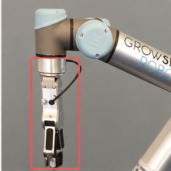
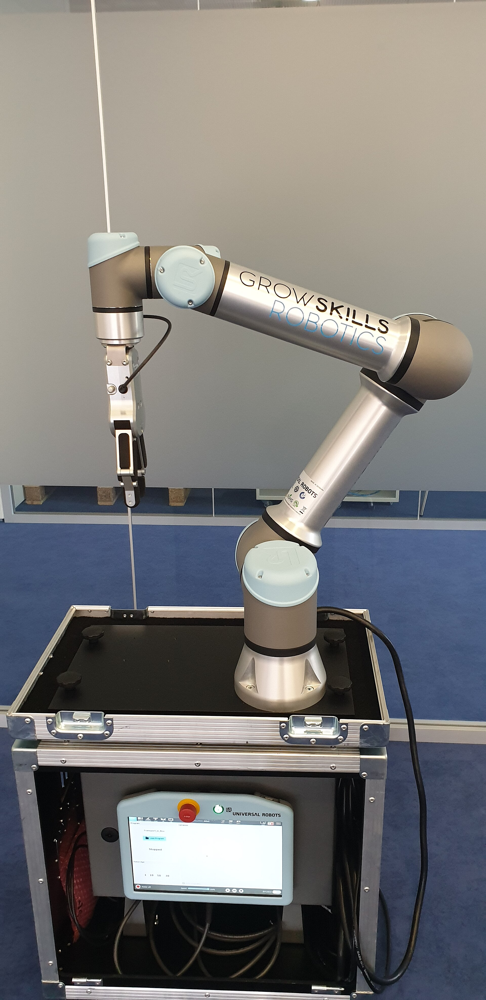
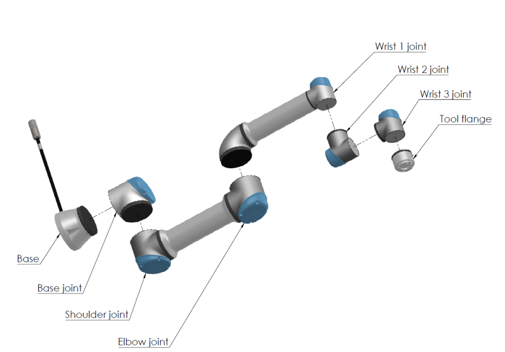
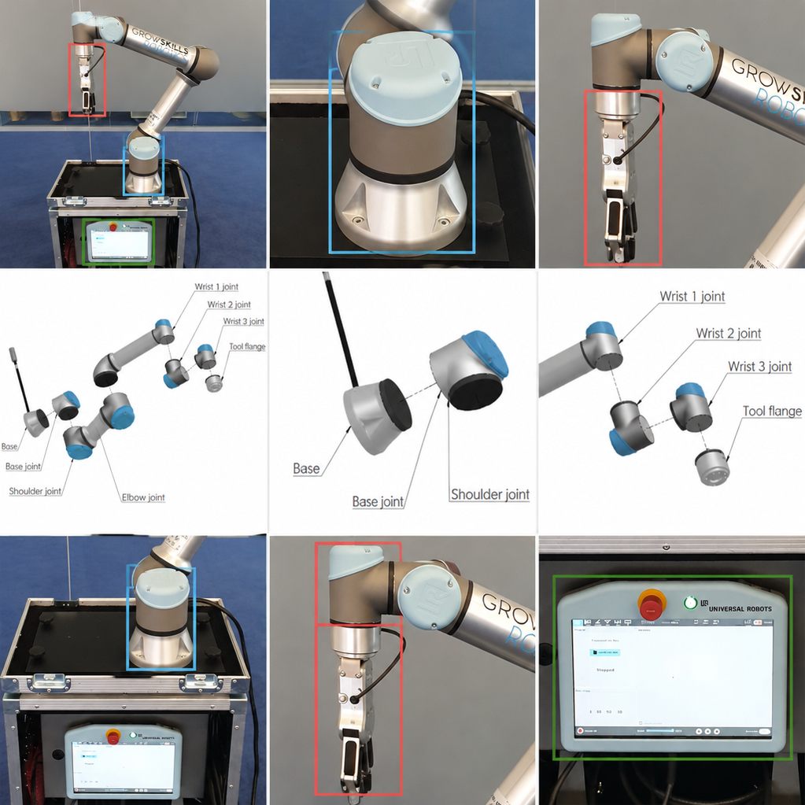
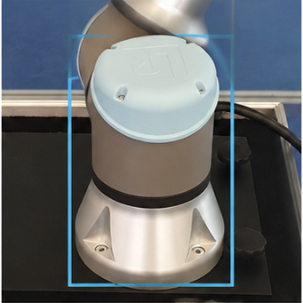
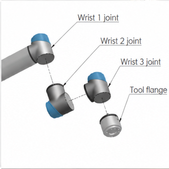
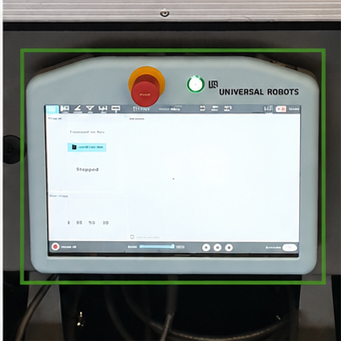

내가 보는 장면
사용자 사진의 부품과 위치를
확대하고 강조합니다.
복잡한 설명을, 눈앞의 이해로.
사진 한 장으로 시작하는
나만의 AI 시각 설명서.

설명과 실물 사이의 거리
정보를 찾은 뒤에도
실물에 적용하는 일은 사용자의 몫입니다.

UR5e · 실제 대화 결과
현재 장착 상태와
설치 확인 범위를 설명해요.
로봇과 그리퍼가 장착된 현재 모습이며 설치 완료 여부는 확인되지 않았습니다.
설명에서 이해로, 세 가지 연결

사용자 사진의 부품과 위치를
확대하고 강조합니다.

요청에 맞춰 장면을 구성하고
한국어 설명과 연결합니다.
사진·매뉴얼·일반 지식을 구분하고
확인한 출처를 함께 보여줍니다.
웹에서 검증하고, 앱으로 연결
Web / Android
FastAPI
Multimodal AI
Text + Visual
처음 보는 장비 앞에서도
사진 한 장이 이해의 시작이 되도록.
보면, 할 수 있어요.


